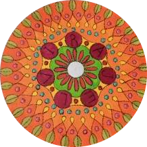

Profesora Nacional de Música recibida en el Conservatorio Nacional de Buenos Aires, en el año 1993. Estudió con el Maestro Oscar Piluso, primera Flauta de la Orquesta estable del Teatro Colón.
Profesor Nacional de Música, recibido en el Conservatorio Nacional de Música de Buenos Aires, López Buchardo. Cursó sus estudios con el Maestro Jorge Martínez Zárate.
Profesor universitario de música (I.U.N.A.):Sonido y grabacion digital, Informatica y medios electroacusticos Comenzó sus estudios musicales a temprana edad en el Colegio Ward (Ramos Mejía).